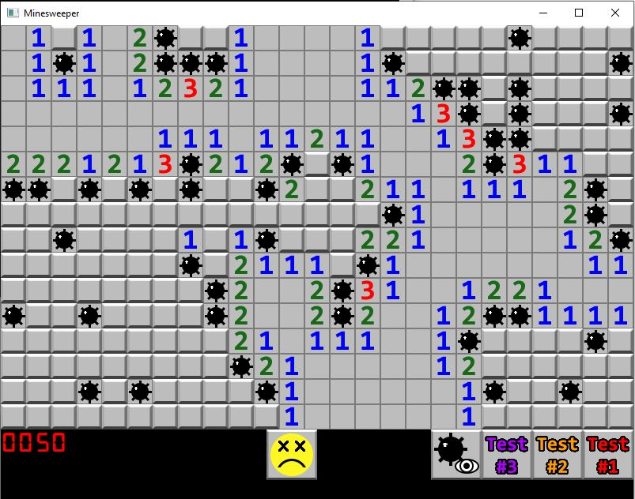

Minesweeper
I created a functional Minesweeper game with GUI using C++ and the Simple and Fast Multimedia Library (SFML). This game has file I/O to read custom minesweeper boards created using a txt file, as well as creating custom gameboards and number of mines. The game also includes a "cheat" mode to view all the mines currently on the board.
Image Filter Program
Created a C++ program that utilizes file IO to apply image filters to
Ping Pong Ball Detection
I created a Python program that uses OpenCv and Canny Edges to detect white and orange ping pong balls and shows the distance of the ball from the webcam.